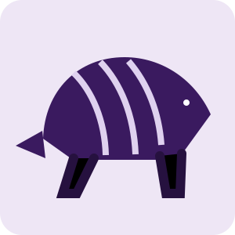

Unidades de conservação
Apoio a ações de conservação, visitação responsável e valorização de parques e reservas.
Conservação do Cerrado • Brasília, DF
O Instituto DF Cerrado é uma organização fictícia dedicada ao apoio a unidades de conservação, pesquisa, educação ambiental e participação social no Distrito Federal.

Quem somos
Atuamos para aproximar ciência, natureza e sociedade. Nossas ações valorizam o conhecimento científico, o uso responsável das áreas protegidas e a formação de pessoas capazes de participar ativamente da conservação ambiental.
O projeto tem atuação fictícia em Brasília e entorno, com foco em parques ecológicos, reservas e outras áreas relevantes para a proteção da biodiversidade do Cerrado.
Nossa missão
Conservação aplicada, pesquisa e educação para fortalecer a relação entre pessoas e áreas naturais.
Apoio a ações de conservação, visitação responsável e valorização de parques e reservas.
Monitoramento de fauna e flora, produção de dados e incentivo à ciência cidadã.
Atividades educativas, trilhas interpretativas e ações com estudantes e visitantes.
Mobilização para recuperação de áreas degradadas e proteção da vegetação nativa.
Biodiversidade
Algumas espécies que representam a diversidade e a importância ecológica do Cerrado.

Chrysocyon brachyurus
Mamífero emblemático do Cerrado e importante dispersor de sementes.
Myrmecophaga tridactyla
Espécie de grande porte associada a áreas abertas e ambientes preservados.

Priodontes maximus
Maior tatu do mundo, dependente de extensas áreas naturais para sobreviver.

Alectrurus tricolor
Pequena ave campestre ligada a ambientes naturais abertos do Cerrado.

Lobelia brasiliensis
Planta nativa que representa a riqueza botânica e os ambientes úmidos do Cerrado.
Impacto demonstrativo
Indicadores fictícios usados apenas para compor este projeto acadêmico.
Participe
Estudantes, pesquisadores, turistas e pessoas da comunidade podem contribuir por meio de ações voluntárias, educação ambiental e apoio às atividades do instituto.
Atuação em rede
O Instituto DF Cerrado busca desenvolver ações de cooperação com instituições públicas ambientais, universidades, centros de pesquisa e comunidades locais, contribuindo para conservação, pesquisa e uso público responsável em unidades de conservação.
Observação: o Instituto DF Cerrado é fictício e foi criado para fins acadêmicos. As menções a cooperação institucional representam apenas uma proposta de atuação.